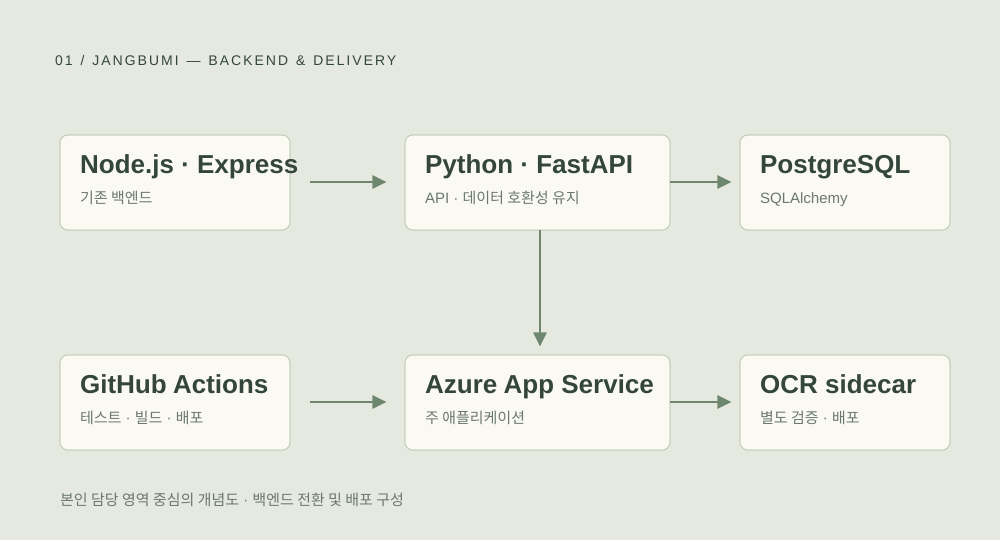

장부미AI 필요경비 사전진단 서비스
PaddleOCR 기능 개발 · Azure 배포 자동화 · FastAPI 전환
상세 보기 ↗
발견한 문제
기존 팀에 합류해 보니 코드의 역할을 파악하기 어렵고, 서로 다른 구조로 개발한 결과를 합치는 데 부담이 있었습니다. 팀이 유지보수할 수 있는 기준이 필요했습니다.
제가 한 선택
팀이 익숙한 Python·FastAPI로 백엔드를 전환했습니다. 폴더 구조와 브랜치·PR 규칙을 정리하고, Pydantic·OpenAPI 기반 타입 검증과 CI/CD를 구성했습니다.
확인한 결과
기능 담당자와 함께 배포된 서비스에서 여러 영수증과 기능을 시험했습니다. 팀원들로부터 병합 부담이 줄고 맡은 부분을 더 안심하고 개발할 수 있다는 피드백을 받았습니다.
팀이 이해할 수 있는 기술을 선택했습니다.
Node.js 자체의 한계보다는 팀의 숙련도에 주목했습니다. 모두 Python을 학습했고 FastAPI에 익숙했으며, 팀원이 개발 중인 PaddleOCR도 Python 기반이었습니다. 기존 화면과 API 동작, PostgreSQL 데이터의 호환성을 유지하는 조건으로 전환했습니다.
배포 성공 이후의 동작까지 확인했습니다.
인증·환경변수·워크플로 오류를 하나씩 이해하며 수정했습니다. Docker·GHCR 기반 OCR 사이드카를 별도로 배포하고, GitHub Actions의 테스트·빌드·배포 후 상태 확인을 연결했습니다. 최종적으로 직접 서비스를 사용하며 담당 개발자와 동작 의도와 응답 속도를 확인했습니다.
기존 팀 프로젝트에 합류해 수행한 구조 개선·배포 작업입니다. 서비스 전체 기능을 단독 개발한 것은 아닙니다.